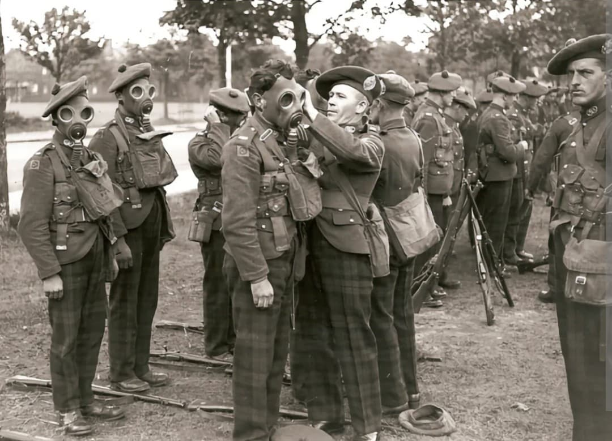
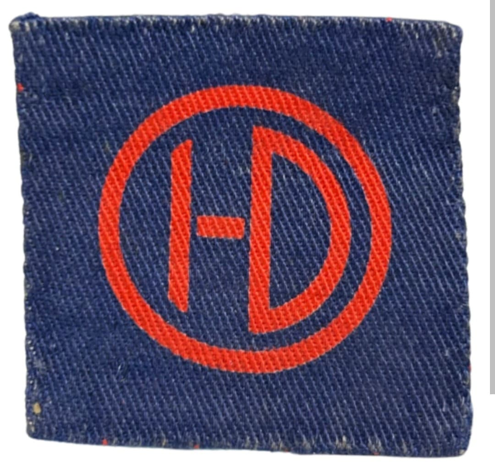
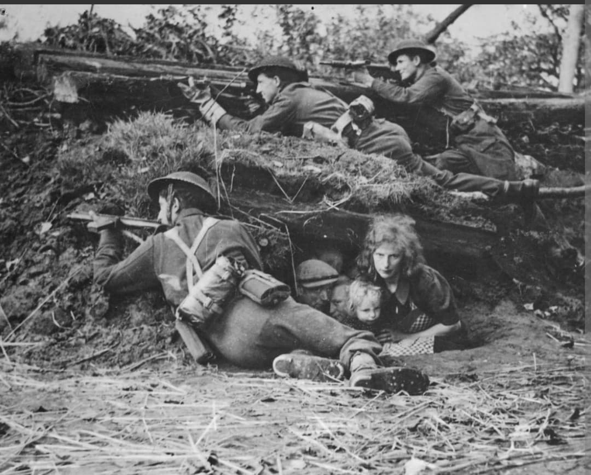

La fierté des Highlands : de la renaissance après la tragédie de Saint-Valery aux grandes heures d'El Alamein et des plages de Normandie

La 51st (Highland) Infantry Division (51e division d'infanterie des Highlands) est l'une des unités militaires écossaises les plus emblématiques et respectées de l'histoire britannique. Portant le kilt et rythmée par le son des cornemuses, elle s'est forgée une réputation légendaire d'acharnement au combat et de fidélité indéfectible.
Après une reconstruction totale suite à sa capture tragique à Saint-Valery-en-Caux en 1940, la « nouvelle » 51e division est devenue l'un des fers de lance de la 8e armée à El Alamein, avant de débarquer en Normandie le 7 juin 1944 pour participer à la libération de l'Europe de l'Ouest.
Formée à l'origine par des régiments territoriaux des Highlands d'Écosse, la division connaît un destin dramatique en juin 1940 en France où, isolée et privée de soutien, la majeure partie de ses effectifs est contrainte de se rendre aux Allemands à Saint-Valery-en-Caux.
Reconstituée à partir de la 9e division écossaise sous le commandement du major général **Douglas Wimberley**, elle renaît de ses cendres avec un moral d'acier. Son insigne distinctif arbore les lettres **HD** (Highland Division) en monogramme rouge sur fond jaune.

Déployée en Égypte, la 51st Highland joue un rôle majeur et décisif lors de la légendaire seconde bataille d'El Alamein en octobre 1942, ouvrant la brèche dans les champs de mines ennemis. Elle participe ensuite à toute la campagne de la 8e armée à travers le désert de Libye et la Tunisie.
Après les sables du désert, elle prend part à l'invasion de la Sicile à l'été 1943, confirmant sa redoutable efficacité lors des assauts contre les positions fortifiées de l'Axe.

Ramenée en Grande-Bretagne pour préparer le grand débarquement, la division foule de nouveau le sol français le **7 juin 1944** (au lendemain du D-Day) sur les plages de Normandie. Elle est immédiatement engagée dans les âpres combats de l'été pour la réduction de la poche de Caen et la percée vers la Seine.
Elle participe ensuite à la libération de la Belgique, des Pays-Bas et traverse le Rhin en mars 1945 lors de l'opération Plunder, terminant sa course victorieuse au nord de l'Allemagne en mai 1945.
Page du Musée HOP WW2 – Section Unités & Divisions